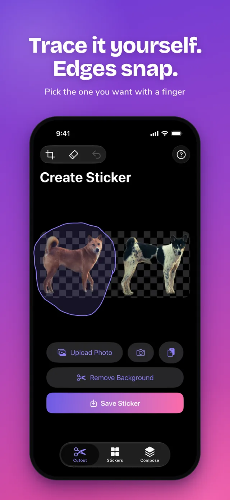
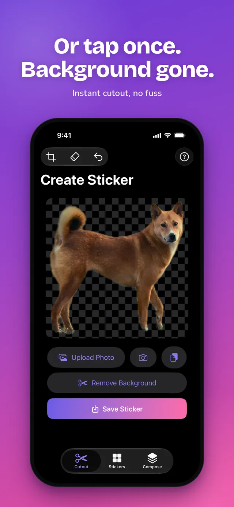
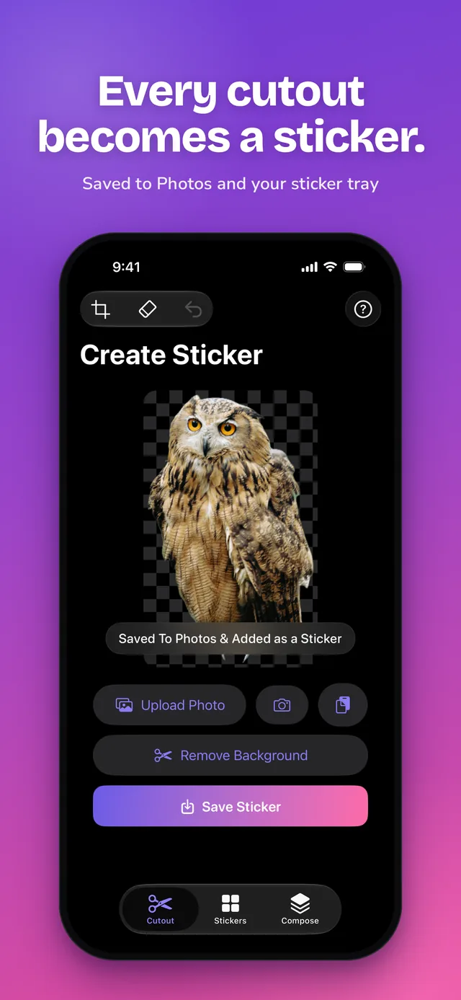

Cropcut: Sticker Maker · How-to
How to crop a sticker on iPhone
There are two free ways to cut a sticker out of a photo on iPhone. The built-in one takes a few seconds and works for clear, simple photos. When it grabs the wrong thing, or you want to trim the result, trace it yourself in Cropcut.
Method 1: the iPhone's built-in Add Sticker
Needs iOS 17 or later. Nothing to install.
- Open the photo in the Photos app.
- Touch and hold the person, pet or object until it lifts with a glowing outline.
- Tap Add Sticker. The sticker appears in your sticker drawer in Messages.
- Optional: tap Add Effect to give it an outline, comic, puffy or shiny look.
Method 2: crop it yourself with Cropcut
Use this when the automatic cutout picks the wrong object, cuts off part of what you wanted, or leaves bits of background behind. Cropcut is a free iPhone app with no ads, no account and no watermark, and it works offline.
- Open Cropcut and tap Upload Photo. You can also take a photo with the camera button or paste one from the clipboard.
- Tap Remove Background for an instant cutout. If it gets it wrong, trace around what you want with your finger, like a lasso. The outline snaps to the edges, so a rough loop is enough.
- Tidy it up: use the eraser to rub out leftovers, the crop tool to trim the frame, and undo if you go too far.
- Tap Save Sticker. It's saved to Photos as a transparent PNG and added to your sticker tray.



Get Cropcut free on the App Store
Using the sticker afterwards
- iMessage: in any chat, tap +, then Stickers, then Cropcut. Every sticker you've made is there.
- WhatsApp or Telegram: in Cropcut's Stickers tab, pick 1 to 30 stickers and tap Add to WhatsApp or Add to Telegram.
- Anywhere else: the PNG in Photos has a transparent background, so you can paste it into Notes, Keynote, Instagram stories or any editor.
Common questions
Can I re-crop a sticker I already made with Add Sticker? No. iOS doesn't let you edit the cutout. Delete it (touch and hold the sticker in the drawer, then Remove) and make it again, or cut the same photo in Cropcut where you control the outline.
How do I crop just one person or object out of a group photo? Trace around that one subject in Cropcut. The built-in tool usually lifts everyone it detects together.
Does cropping a sticker reduce the photo quality? The original photo isn't changed. The sticker is saved as a separate PNG.
Is this free? Both methods are. Cropcut has no subscription, no ads and no watermark.
Last updated November 2026 for iOS 17 and later and Cropcut 1.2. Cropcut is an independent app and is not affiliated with Apple Inc., WhatsApp or Telegram. Back to Cropcut · Privacy